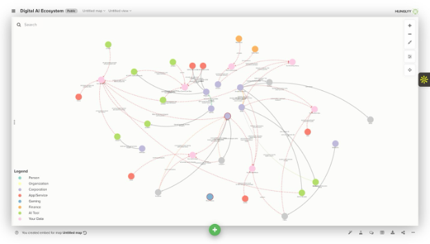

I Have No Node
A network of every platform, company, and data type in my digital ecosystem. I am visible as the data source. I have no node.
The Artifact

Kumu visualization. Color legend: blue = person, green = corporation, purple = app/service, red = AI tool, orange = your data.
Your Take
The most central node
The most central node is Google (Alphabet) — highest degree centrality. It connects to the most other nodes: data types (browsing history, location, content, AI prompts), its own products (YouTube, Gmail, Gemini), and even Apple, its supposed competitor, which receives approximately $20 billion per year from Google to remain Safari's default search engine. This financial relationship is the network's most surprising edge: Apple's entire privacy marketing brand is funded partly by the company it claims to protect users against.
Three clusters
The Meta cluster: Facebook, Instagram, and Meta forming a tightly interconnected group, all feeding into a unified social graph and, since 2024, into Meta's Llama AI training pipeline.
The Microsoft/work cluster: LinkedIn, GitHub, and VS Code Copilot forming a professional identity network where Microsoft quietly collects career data, code, and AI prompts across tools many people consider neutral utilities.
The data type cluster: nodes like "Your Location Data," "Your Financial Data," and "Your AI Prompts" sit at the intersection of many companies, acting as bridges between platforms that would otherwise seem unrelated.
The surprise: AI prompt collection
The most surprising finding was how many companies collect AI prompts — not just ChatGPT, but VS Code Copilot (routed through Microsoft/OpenAI), Gemini, Claude, Lovable, Canva AI, and Jobright. Every question asked, every piece of code written with AI assistance, every job application drafted with AI becomes data owned by a corporation.
Power is radial
Power in this network is not distributed; it is radial. Every action — searching, messaging, coding, applying for jobs, asking AI a question — produces data that flows toward four hubs: Apple, Google, Meta, Microsoft. The entities with the most edges are not the services I consciously chose to use. They are the parent companies I never directly interact with.
I have no node
I am technically visible as the user who generates the data, but I have no node. My data — location, prompts, social graph, financial behavior — appears in the network as abstract types, not as a person with agency. The companies are visible; their internal AI systems and the advertisers who purchase the profiles built from my behavior are not. The workers who moderate content, the people in the DRC whose cobalt powers the devices, the regulators who failed to prevent this consolidation — all invisible.
D'Ignazio and Klein (2020) argue in Data Feminism that the choice of what to put at the center of a visualization is never neutral. If I had centered this network on myself as the user, with edges pointing outward to services I chose rather than inward to corporations that chose me, the network would imply agency and consent. A network centered on advertisers would reveal the true economic structure: I am not the customer, I am the product. The choice of center node is always a political choice.
Attribution & AI Use
- Tools used
- Kumu (network mapping and visualization) · Claude AI by Anthropic (research organization and data verification) · WebAIM Contrast Checker (accessibility testing) · Google My Maps (cross-reference for geographic data)
- AI prompts (summary)
- I asked Claude to help compile and cross-reference which data types flow between specific companies — for example, confirming the reported figure for Google's annual payment to Apple and verifying which platforms route AI prompts through Microsoft/OpenAI infrastructure. I also asked it to identify gaps in the network.
- What AI generated
- A structured list of data-sharing relationships between platforms and parent companies, used as a research starting point. AI also flagged nodes I had not initially included — specifically data brokers (Acxiom, LexisNexis) and the advertiser layer — which I ultimately chose to omit from the visual with a documented rationale.
- What I changed or decided
- Every structural and argumentative decision in this network is my own. I chose to center the network on corporations rather than on myself as the user — a deliberate political choice. The three-cluster structure, the identification of "Your AI Prompts" as a bridge node, and the observation that Apple's privacy brand is financially underwritten by Google are findings I arrived at through my own analysis. The written components are entirely my own prose.
Weekly reflection · Week 07
Who is visible/invisible in AI networks? How does visualization reveal or obscure power?
Building my personal AI ecosystem network made the invisible suddenly visible. On the surface, I interact with dozens of apps daily (Spotify, Gmail, TikTok, ChatGPT) but the network revealed that nearly everything flows back to four corporations: Google, Apple, Meta, and Microsoft. What struck me most was not the individual apps but the data type nodes. My location, my AI prompts, my financial behavior, my social graph — these sit at the center of the network as bridges connecting platforms that seem completely unrelated to each other.
What the visualization obscures is just as important. I have no node. The person generating all this data is absent from the map, which itself is a statement about power. I am not a participant in this network, I am its raw material. Also invisible are the data brokers, the advertisers who are the actual customers, and the workers and communities whose labor and resources make the physical infrastructure possible.
Next make →
08 — Strange Inventory